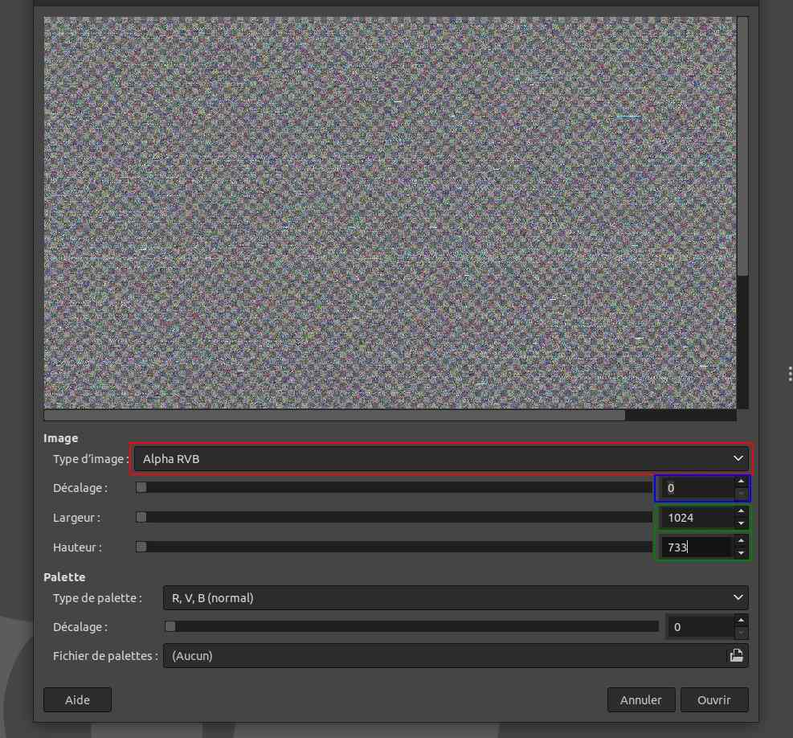
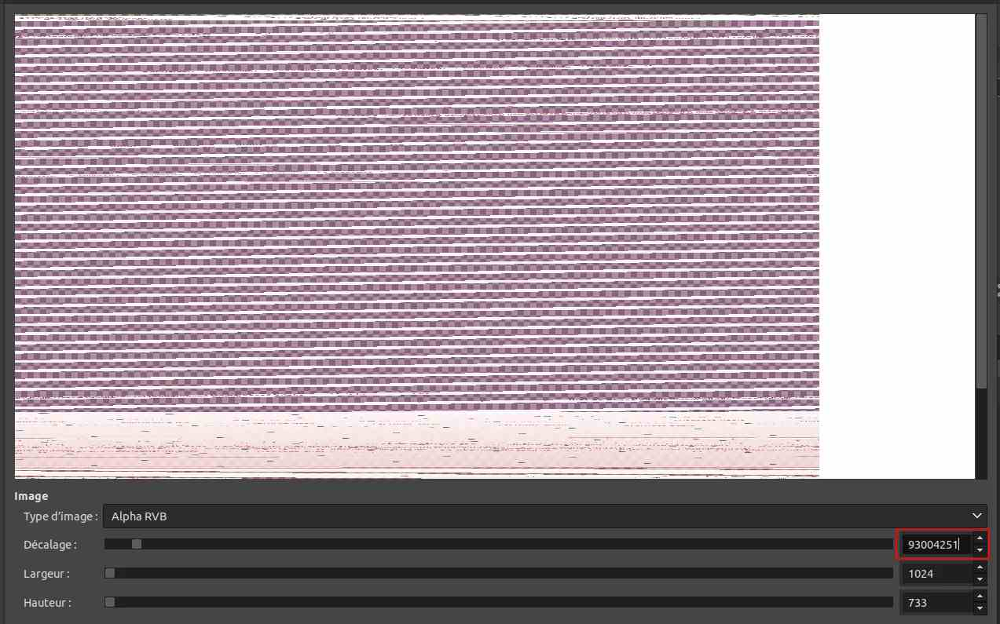
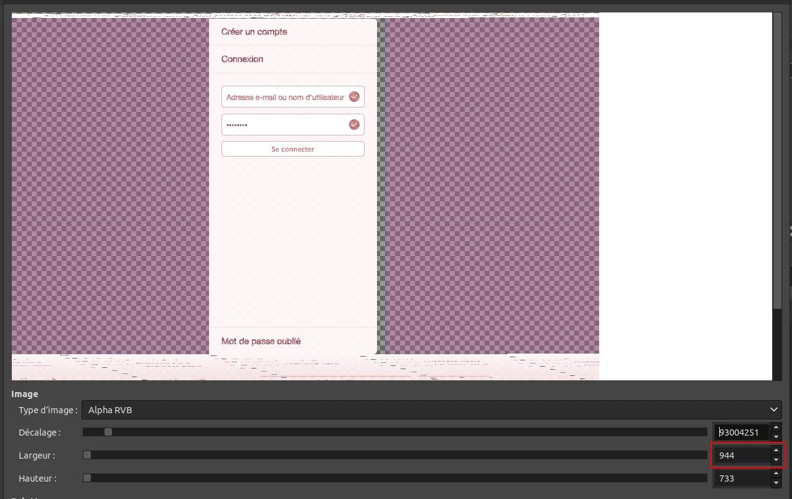

Security Post-it #2 - Volatility x Gimp
In this short security post-it, I explain how to extract visuals from a process memory dump with Volatility and Gimp.
Mar 08, 2021 by Nicolas Béguier
How to extract visuals from a process memory dump with Volatility and Gimp
Volatility is a tool supported by the Volatility Foundation and aims to assist the forensic
investigator when analyzing a computer memory dump.
In this article, I'll be focusing on Volatility2, but it's possible to do things in a similar way with Volatility3, I'm just less comfortable with this tool. I will surely update this article to outline the steps of Volatility3 when I find out.
This security post-it is about exploring the visuals in a process memory dump, which cannot be done with raw memory dump. I'll walk you through how to extract a process memory dump and how to use Gimp to visualize it.
This can be done easily on a Windows or MacOS memory dump, tooling on a Linux dump is not that straightforward. Probably in a future update I'll explain how to do it.
In this article, I'll be focusing on Volatility2, but it's possible to do things in a similar way with Volatility3, I'm just less comfortable with this tool. I will surely update this article to outline the steps of Volatility3 when I find out.
This security post-it is about exploring the visuals in a process memory dump, which cannot be done with raw memory dump. I'll walk you through how to extract a process memory dump and how to use Gimp to visualize it.
This can be done easily on a Windows or MacOS memory dump, tooling on a Linux dump is not that straightforward. Probably in a future update I'll explain how to do it.
Dump process memory
Here, volatility is an alias for my volatility2 python path.
Prepare the directory to dump the process memory dump:
$ mkdir /tmp/memdump/
For a Windows profile, with the process PID 1234:
$ volatility -f dump.raw --profile=MyWinProfile memdump --pid 1234 --dump-dir /tmp/memdump/
For a MacOS profile, with the process PID 1234:
$ volatility -f dump.raw --profile=MyMacProfile mac_memdump --pid 1234 --dump-dir /tmp/memdump/
Prepare the directory to dump the process memory dump:
$ mkdir /tmp/memdump/
For a Windows profile, with the process PID 1234:
$ volatility -f dump.raw --profile=MyWinProfile memdump --pid 1234 --dump-dir /tmp/memdump/
For a MacOS profile, with the process PID 1234:
$ volatility -f dump.raw --profile=MyMacProfile mac_memdump --pid 1234 --dump-dir /tmp/memdump/
Edit with GIMP and start digging
Now you have your process memory dump in /tmp/memdump/, you can rename the file with the extension .data, which Gimp will automatically
understand as a raw input.
Then, open it with gimp in command line:
$ gimp /tmp/memdump/1234.data
First of all, set the Image type to RGB Alpha, width to 1024 and height to 733, which represent a classic low computer resolution.
You can now adjust the displacement to observe the memory and find something interesting.
For instance, a large striped white screen can be found at 93004251.
We need to tune the width to display the original image, here at 944.
Great, we've found one image from the process memory dump, way more can be found in it.
Here is my personal bash function to abstract all those command lines and directly observe the process memory dump.
Then, open it with gimp in command line:
$ gimp /tmp/memdump/1234.data
First of all, set the Image type to RGB Alpha, width to 1024 and height to 733, which represent a classic low computer resolution.

For instance, a large striped white screen can be found at 93004251.


Here is my personal bash function to abstract all those command lines and directly observe the process memory dump.